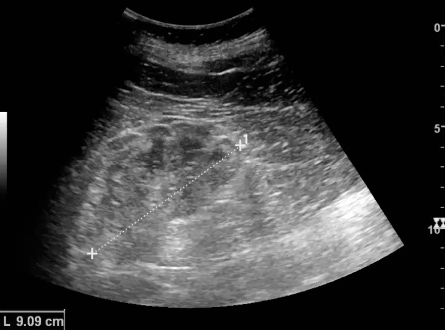

DX.3 — Insuffisance rénale chronique, syndrome néphrotique
1. Définition
Une insuffisance rénale chronique est une anomalie de structure ou de fonction du rein, présente depuis plus de 3 mois (KDIGO 2024)1. Elle exige un DFGe inférieur à 60 mL/min/1,73 m² ou un marqueur de lésion rénale1. Le syndrome néphrotique associe une protéinurie supérieure à 3,5 g en 24 heures, une albumine sérique inférieure à 30 g/L et des œdèmes (KDIGO 2021)2.
2. Épidémiologie (Suisse, puis Europe)
En Suisse, l'IRC touche 10,4 % des 15 ans et plus (enquête 2010-2012, 1353 participants),9 avec une prévalence semblable dans les trois régions. Une méta-analyse mondiale réunit 100 études et 6,9 millions de personnes3. Elle chiffre la prévalence de l'IRC à 13,4 % (IC95 11,7–15,1) tous stades3. Elle la chiffre à 10,6 % (IC95 9,2–12,2) aux stades 3 à 5.3
| Dimension épidémiologique (population, période) | Chiffre ou constat rapporté | Portée pour le médecin |
|---|---|---|
| Prévalence suisse, tous stades | 10,4 % (15 ans et plus, 2010-2012)9 | Un adulte sur dix est concerné ; dépister les groupes à risque |
| Prévalence mondiale, tous stades | 13,4 % (population générale, méta-analyse 2016)3 | Un adulte sur huit environ est concerné |
| Stades 3 à 5 (prévalence en %)3 | 10,6 % (IC95 9,2–12,2) ; stade 3 : 7,6 %, stade 4 : 0,4 %, stade 5 : 0,1 % (population générale, méta-analyse 2016)3 | La majorité des cas reste au stade 3, souvent sans symptôme3 |
| Groupes à risque | Diabète, hypertension, maladie cardiovasculaire, âge élevé, antécédent familial, médicaments néphrotoxiques4 | Mesurer DFGe et ACR chez ces patients, une fois par an |
| Âge, sexe, géographie | Prévalence croissante avec l'âge ; en Suisse, sexe féminin, diabète et acide urique associés dès 45 ans, régions linguistiques semblables3,9 | Viser les plus de 60 ans, les diabétiques et les hypertendus3 |
| Gravité | Risque cardiovasculaire accru à tous les stades ; mortalité prématurée3 | Le patient meurt plus souvent d'un événement cardiovasculaire que de dialyse |
| Santé publique | Maladie longtemps silencieuse ; dépistage par prise de sang et d'urine3,4 | Le dépistage précoce permet de ralentir l'évolution avant le stade de la dialyse |
3. Physiopathologie
La cascade va de la cause à l'œdème : moléculaire (protéines de la barrière, système rénine-angiotensine) → cellulaire (podocyte, cellule tubulaire) → tissulaire (glomérulosclérose, rétention de sodium) → clinique (œdème, hypertension, urémie).
Amorce. Une agression (diabète, hypertension, glomérulopathie, toxique) détruit des néphrons. Les néphrons restants filtrent davantage : c'est l'hyperfiltrationChaque néphron restant filtre plus ; il compense la perte, mais il s'use..
Développement. L'hyperfiltration lèse les glomérules et provoque une gloméruloscléroseCicatrisation fibreuse des glomérules : la surface de filtration disparaît de façon irréversible.. Le DFG baisse. Installation. Le rein excrète moins de sodium et d'eau ; le volume extracellulaire augmente et la pression capillaire monte. L'eau passe dans l'interstitium : c'est l'œdème. Maintien. L'activation du SRAACe système retient le sodium et l'eau. et la rétention sodée entretiennent l'hypertension et la surcharge.2,4
Dans le syndrome néphrotique, la barrière glomérulaire permet le passage de l'albumine. La protéinurie dépasse 3,5 g par 24 heures et l'albuminémie chute5. Deux mécanismes expliquent l'œdème : la baisse de pression oncotique (hypothèse « underfill ») et la rétention rénale primaire de sodium (hypothèse « overfill »). Dans le second cas, des protéases urinaires activent le canal ENaCCanal sodique épithélial du tube collecteur ; son activation retient le sodium. L'amiloride le bloque. du tube collecteur, et le sodium est réabsorbé malgré un volume plein.5 Le foie fabrique plus de lipoprotéines : le cholestérol LDL monte. L'urine perd aussi l'antithrombine et les immunoglobulines : le risque de thrombose et d'infection augmente.5,2
| Lésion ou perturbation | Exploration qui la montre | Thérapeutique et mécanisme |
|---|---|---|
| Perte de néphrons, DFG bas | Créatinine, DFGe, échographie rénale | IEC ou ARA, Forxiga® : baisse de la pression intraglomérulaire |
| Rétention de sodium et d'eau | Poids, godet, prise de poids, NT-proBNP | Restriction sodée et diurétique de l'anse (Lasix®) : excrétion du sodium |
| Fuite d'albumine glomérulaire | ACR, PCR, albumine sérique | Bloqueur du SRAA : baisse de la protéinurie ; traitement de la cause (biopsie) |
| Hyperaldostéronisme secondaire | Kaliémie, rapport Na/K urinaire | Antagoniste minéralocorticoïde (Aldactone®) : bloque le récepteur distal |
| Hypercoagulabilité (perte d'antithrombine) | Albumine < 25 g/L, doppler veineux si douleur5 | HBPM prophylactique (Clexane®) : potentialise l'antithrombine |
| Hyperlipidémie néphrotique | Bilan lipidique | Statine (Sortis®) : bloque la synthèse du cholestérol |
| Anémie par déficit en EPO | Hémoglobine, ferritine, saturation de la transferrine | Fer IV (Ferinject®) ou agent stimulant l'érythropoïèse selon la cible |
| Hyperphosphatémie, hyperparathyroïdie secondaire | Phosphate, calcium, PTH | Chélateur du phosphate, vitamine D : selon le néphrologue |
4. Démarche diagnostique
Le titre impose une question : l'œdème vient-il du rein ? Le médecin écarte d'abord les urgences, puis il cherche l'atteinte rénale par la créatinine et la protéinurie.
Étape 1. Écarter les drapeaux rouges. Chaque drapeau est cliquable.
| Drapeau rouge | Signe ou examen qui tranche | Piège | Diagnostic associé |
|---|---|---|---|
| 🚩 Détresse respiratoire avec crépitantsL'eau envahit les alvéoles : l'hématose baisse et le patient peut mourir en heures. Oxygène et diurétique IV sont urgents. | Saturation, crépitants bilatéraux, radiographie thoracique | Prendre un OAP pour une pneumonie | Surcharge de l'IRC, insuffisance cardiaque |
| 🚩 Hyperkaliémie avec modification de l'ECGLe potassium élevé provoque des arythmies fatales ; des ondes T amples ou un QRS large imposent un traitement immédiat. | ECG et kaliémie immédiats | Une hémolyse du tube donne une fausse hyperkaliémie ; contrôler sur un nouveau prélèvement sans retarder l'ECG | IRC G4–G5, IEC, antagoniste minéralocorticoïde |
| 🚩 Oligurie ou anurie, créatinine en hausse rapideUne insuffisance rénale aiguë se greffe sur l'IRC ; la cause est souvent réversible (hypovolémie, obstruction, médicament). | Diurèse, créatinine répétée, échographie | Attribuer la hausse à l'IRC stable | Insuffisance rénale aiguë sur IRC |
| 🚩 Syndrome urémique : confusion, péricardite, saignementL'accumulation des toxines urémiques atteint cerveau, péricarde et plaquettes. La dialyse devient urgente. | Astérixis, frottement péricardique, urée et créatinine | Attribuer la confusion à l'âge | IRC terminale |
| 🚩 Douleur de flanc avec hématurie, ou mollet gonfléUne thrombose de la veine rénale ou une TVP complique le syndrome néphrotique : l'hypercoagulabilité est marquée si l'albumine est inférieure à 25 g/L5. | Doppler veineux, angio-scanner selon le cas | Mollet œdématié bilatéral attribué au syndrome | Syndrome néphrotique compliqué |
| 🚩 Hématurie, hypertension, créatinine qui double en semainesUne glomérulonéphrite rapidement progressive détruit le rein en jours à semaines ; seul un traitement précoce le sauve. | Sédiment urinaire (cylindres érythrocytaires), avis néphrologique le jour même | Retarder la biopsie | Syndrome néphritique, vascularite |
| 🚩 Fièvre avec peau rouge ou douleur abdominaleLa perte d'immunoglobulines expose le patient néphrotique à la cellulite et à la péritonite à pneumocoque. | Examen cutané, ponction d'ascite, hémocultures | Minimiser une fièvre modérée | Infection du syndrome néphrotique |
Étape 2. Sans urgence. Les grandes étapes mènent au diagnostic :
- Le médecin confirme un œdème bilatéral, déclive, qui prend le godet (point 6).
- Le médecin mesure la créatinine, calcule le DFGe ; il mesure l'ACR sur urine du matin (point 9).
- Le médecin dose l'albumine sérique ; une protéinurie supérieure à 3,5 g en 24 heures avec hypoalbuminémie définit le syndrome néphrotique2.
- Le médecin contrôle de nouveau les anomalies après 3 mois pour affirmer la chronicité1.
- Examiner le sédiment urinaire et l'échographie rénale pour orienter vers la cause.
- Demander la biopsie ou les sérologies si le syndrome néphrotique n'a pas de cause évidente (point 9.d).
5. Anamnèse ciblée et drapeaux rouges
Le patient consulte le plus souvent pour des jambes et des paupières gonflées ; le médecin caractérise ce gonflement avant de chercher sa cause. Les questions clés cherchent ensuite la chronicité, la cause rénale, les médicaments et une autre cause d'œdème. Une dyspnée de repos, des palpitations, une confusion, une douleur de flanc ou une hématurie avec hypertension imposent l'action immédiate décrite au tableau des drapeaux rouges du point 4.
6. Examen physique ciblé, région par région
L'examen suit l'ordre topo-systémique, de la tête aux pieds. Il compare toujours le normal au pathologique : état général et mesures, tête et cou, thorax, abdomen, membres inférieurs et peau et système nerveux. Chaque fenêtre donne le signe recherché, la technique, la valeur et le piège.
7. Approche syndromique
Cinq syndromes composent le tableau. Chacun sépare les signes fonctionnels et les signes physiques.
7.1 Syndrome néphrotique
Signes fonctionnels : urines mousseusesDéfinition : une mousse persiste dans la cuvette. Recherche : demandez si elle persiste après la chasse d'eau. Mécanisme : les protéines abaissent la tension superficielle. ; gonflement des paupières le matinDéfinition : c'est un œdème palpébral présent au lever. Recherche : demandez son horaire et son évolution dans la journée. Mécanisme : le décubitus redistribue l'eau vers le visage. ; prise de poids rapideDéfinition : c'est un gain de plusieurs kilos en quelques jours. Recherche : comparez avec le poids habituel. Mécanisme : le rein retient le sodium et l'eau..
Signes physiques : œdème prenant le godetDéfinition : c'est un creux qui persiste après pression. Recherche : appuyez fermement sur le tibia ou le sacrum. Mécanisme : la pression oncotique baisse et la rétention de sodium augmente la pression capillaire. ; anasarqueDéfinition : c'est un œdème généralisé avec épanchements. Recherche : cherchez ascite, matité pleurale et œdème scrotal. Mécanisme : l'eau s'accumule dans toutes les séreuses. ; pression artérielle normale ou hauteDéfinition : elle se mesure au repos. Recherche : mesurez-la deux fois, patient assis. Mécanisme : la rétention sodée et le SRAA élèvent la pression..
7.2 Syndrome de surcharge hydrosodée de l'IRC
Signes fonctionnels : dyspnée d'effort puis de reposDéfinition : le souffle devient court d'abord à l'effort, puis au repos. Recherche : demandez le nombre d'étages montés. Mécanisme : l'eau envahit l'interstitium pulmonaire. ; orthopnéeDéfinition : c'est une dyspnée allongée que l'on soulage assis. Recherche : demandez le nombre d'oreillers. Mécanisme : le décubitus augmente le retour veineux..
Signes physiques : crépitants des basesDéfinition : ce sont des bruits fins entendus à l'inspiration. Recherche : auscultez les bases à l'inspiration profonde. Mécanisme : les alvéoles se remplissent de liquide. ; turgescence jugulaireDéfinition : ce sont des veines du cou distendues chez le patient semi-assis. Recherche : mesurez la hauteur au-dessus de l'angle sternal. Mécanisme : la volémie est élevée. ; hypertensionDéfinition : la pression dépasse les valeurs normales. Recherche : utilisez un brassard adapté après un repos. Mécanisme : le volume extracellulaire augmente..
7.3 Syndrome urémique
Signes fonctionnels : anorexie et nauséesDéfinition : le patient refuse les aliments et vomit. Recherche : interrogez sur le goût métallique. Mécanisme : les toxines urémiques agissent sur le tube digestif. ; pruritDéfinition : le patient se gratte sans lésion primaire. Recherche : cherchez les excoriations. Mécanisme : la rétention de toxines et de phosphate irrite la peau. ; crampes et jambes sans reposDéfinition : des contractions douloureuses surviennent la nuit. Recherche : interrogez sur le sommeil. Mécanisme : les troubles électrolytiques et neuropathiques les provoquent. ; fatigueDéfinition : l'asthénie persiste malgré le repos. Recherche : quantifiez l'effort tolérable. Mécanisme : l'anémie et l'acidose y contribuent..
Signes physiques : haleine urémiqueDéfinition : l'haleine a une odeur ammoniacale. Recherche : sentez l'haleine à distance. Mécanisme : la salive transforme l'urée en ammoniac. ; astérixisDéfinition : les mains tendues battent de façon irrégulière. Recherche : demandez les bras tendus, mains en extension. Mécanisme : les toxines altèrent le contrôle moteur. ; frottement péricardiqueDéfinition : c'est un bruit râpeux au bord gauche du sternum. Recherche : penchez le patient en avant, expiration bloquée. Mécanisme : les toxines enflamment le péricarde..
7.4 Syndrome néphritique (à écarter)
Signes fonctionnels : urines rouges ou « cola »Définition : une hématurie d'origine glomérulaire devient visible. Recherche : demandez l'aspect du jet initial et terminal. Mécanisme : les hématies traversent la barrière lésée. ; oligurieDéfinition : la diurèse devient faible. Recherche : demandez le nombre de mictions. Mécanisme : le DFG baisse..
Signes physiques : hypertension récenteDéfinition : la pression s'élève pour la première fois. Recherche : mesurez-la deux fois. Mécanisme : la rétention sodée est aiguë. ; œdème léger du visageDéfinition : le visage gonfle discrètement. Recherche : examinez les paupières. Mécanisme : la rétention d'eau est modérée..
7.5 Complications thrombotiques et infectieuses du syndrome néphrotique
Signes fonctionnels : douleur du mollet ou du flancDéfinition : la douleur est brutale et unilatérale. Recherche : demandez le côté, l'horaire et la dyspnée associée. Mécanisme : une thrombose veineuse profonde ou rénale la provoque. ; fièvre avec douleur abdominaleDéfinition : la fièvre s'associe à une défense abdominale. Recherche : demandez l'évolution en heures. Mécanisme : la perte d'immunoglobulines favorise la péritonite..
Signes physiques : jambe asymétrique, chaude, douloureuseDéfinition : le mollet augmente de volume d'un seul côté. Recherche : mesurez les périmètres des deux mollets au même niveau. Mécanisme : un thrombus bloque le retour veineux. ; placard rouge, chaud, bien limitéDéfinition : c'est une cellulite ou un érysipèle. Recherche : inspectez la peau et tracez les limites. Mécanisme : l'immunodéficience humorale favorise l'infection cutanée..
8. Diagnostic positif et critères
Insuffisance rénale chronique (KDIGO 2024). Le diagnostic exige une anomalie présente depuis plus de 3 mois, avec au moins un critère :1
- le DFGe est inférieur à 60 mL/min/1,73 m²1 ;
- l'ACR est supérieur ou égal à 3 mg/mmol1 ;
- le sédiment, la fonction tubulaire, l'histologie ou l'imagerie montre une anomalie, ou le patient a reçu une greffe.
| Catégorie | DFGe (mL/min/1,73 m²) ou ACR | Libellé | Usage clinique |
|---|---|---|---|
| G1 | ≥ 90 | Normal ou élevé | Lésion rénale requise pour parler d'IRC |
| G2 | 60 à 89 | Légèrement diminué | Idem |
| G3a | 45 à 59 | Légèrement à modérément diminué | Adapter les médicaments rénaux |
| G3b | 30 à 44 | Modérément à sévèrement diminué | Avis néphrologique conseillé |
| G4 | 15 à 29 | Sévèrement diminué | Préparer le traitement de suppléance |
| G5 | < 15 | Insuffisance rénale terminale | Dialyse ou greffe |
| A1 | < 3 mg/mmol | Normal à légèrement augmenté | Contrôle annuel |
| A2 | 3 à 30 mg/mmol | Modérément augmenté | Bloqueur du SRAA si diabète |
| A3 | > 30 mg/mmol | Sévèrement augmenté | Bloqueur du SRAA, avis néphrologique |
Syndrome néphrotique (KDIGO 2021). Il réunit quatre éléments : protéinurie supérieure à 3,5 g par 24 heures, albumine sérique inférieure à 30 g/L, œdème et, souvent, hyperlipidémie2. La protéinurie et l'hypoalbuminémie sont les critères majeurs ; l'hyperlipidémie est un signe mineur et non obligatoire.2
Ce qui ne suffit pas.
- Un DFGe inférieur à 60 mL/min/1,73 m² sur un seul dosage : il peut traduire une insuffisance rénale aiguë2.
- Une bandelette urinaire positive : la quantification (ACR, PCR) reste nécessaire.
- Un œdème sans protéinurie importante : il évoque une cause cardiaque, hépatique ou veineuse.
- Une créatinine normale : elle n'écarte pas l'IRC, car un ACR élevé plus de 3 mois suffit2.
- Un DFGe erroné chez le patient sarcopénique ou amputé : doser la CysC.
9. Examens complémentaires
9.a Gold standard
Pour l'IRC, le gold standard du DFG est la clairance mesurée d'un marqueur exogène (iohexol ou inuline). Le diagnostic repose sur le DFGe et l'ACR, jamais sur la mesure directe.1 La biopsie est la référence histologique. Pour la cause d'un syndrome néphrotique, le gold standard est la biopsie rénalePrélèvement d'un fragment de rein par aiguille sous échographie ; examen en microscopie optique, immunofluorescence et électronique. Contre-indications : trouble de l'hémostase non corrigé, hypertension non contrôlée, rein unique, infection. ; elle est inutile devant un diabète typique de longue date.2
| Examen | Indication | Prescription exacte | Résultat → signification → conduite |
|---|---|---|---|
| Biopsie rénale | Syndrome néphrotique de l'adulte sans cause évidente ; hématurie glomérulaire ; baisse rapide du DFG | Biopsie sous échographie après contrôle de l'hémostase, de la PA et de l'hémoglobine | LGM, HSF, néphropathie membraneuse, autre → traitement ciblé par le néphrologue |
| Clairance de l'iohexol | Doute sur le DFGe (extrêmes de poids, sarcopénie, dose de chimiothérapie, donneur de rein) | Injection IV d'iohexol, prélèvements à heures fixes selon le laboratoire | DFG mesuré remplace le DFGe ; classer G1 à G5 |
9.b Première intention
Le bilan de départ cherche la cause, la gravité et les complications. Il se prescrit en une visite : prise de sang, urine du matin et échographie.
Le médecin prescrit les examens suivants ; chaque fenêtre donne la prescription, la valeur normale, le seuil, sa signification et la conduite.
- Il demande : Créatinine, DFGe.
- Il demande : ACR sur urine du matin.
- Il demande la PCR ou la protéinurie des vingt-quatre heures.
- Il demande : Albumine sérique.
- Il demande : Sédiment urinaire.
- Il demande : Kaliémie, sodium, bicarbonate.
- Il demande : Hémoglobine, ferritine, TSAT.
- Il demande : Calcium, phosphate, PTH.
- Il demande : Bilan lipidique, glycémie, HbA1c.
- Il demande : Échographie rénale.
9.c Alternatives
| Situation | Alternative | Conduite |
|---|---|---|
| Créatinine peu fiable (sarcopénie, cirrhose, régime végétalien) | CysC : DFGe combiné créatinine et CysC | Confirmer l'IRC avant décisions lourdes |
| Grossesse | Échographie, pas de scanner injecté ; protéinurie à interpréter selon la prééclampsie | Avis obstétrical (DX.13)12 |
| Enfant | Équation pédiatrique ; syndrome néphrotique : lésions glomérulaires minimes fréquentes | Avis de néphrologie pédiatrique |
| DFGe < 30 mL/min/1,73 m²12 | Éviter les produits de contraste iodés ; produits à base de gadolinium du groupe II si IRM indispensable | Hydratation, avis radiologique |
| Allergie aux produits iodés | Échographie, IRM sans contraste | Prémédication selon protocole hospitalier |
| Dispositif non compatible IRM | Échographie ou scanner sans injection | Choisir selon la question posée |
| Bandelette urinaire seule | ACR et PCR quantitatifs | Éviter une conclusion d'après la bandelette |
9.d Deuxième intention
Elle s'applique au syndrome néphrotique sans cause évidente, ou à l'IRC de cause inconnue. Le critère de passage est l'absence de diabète typique, d'hypertension ancienne ou de médicament en cause.
| Examen | Indication | Interprétation → conduite |
|---|---|---|
| Anticorps anti-PLA2R | Syndrome néphrotique de l'adulte | Positif avec protéinurie néphrotique : néphropathie membraneuse ; biopsie parfois évitable (KDIGO 2021)10. Sensibilité 68 %, spécificité 97 % pour séparer forme primaire et secondaire (méta-analyse, 1160 patients).10 |
| Sérologies HBV, HCV, VIH | Glomérulopathie secondaire | Positives : traiter l'infection |
| ANA, anti-ADN natif, C3, C4 | Lupus, glomérulonéphrite | Hypocomplémentémie et anticorps positifs : lupus ; avis néphrologique |
| Immunofixation sérique et urinaire, chaînes légères libres | Adulte de plus de 50 ans avec syndrome néphrotique10 | Pic monoclonal : amylose ou maladie à chaînes légères ; avis hématologique |
| Doppler veineux, scanner ou angio-IRM | Douleur de flanc, hématurie, suspicion de thrombose de la veine rénale | Thrombus : anticoagulation thérapeutique |
| Biopsie rénale | Voir 9.a | Selon le résultat anatomopathologique |
10. Arbre décisionnel
L'arbre commence par l'exclusion des urgences, puis il discrimine les causes de l'œdème. Chaque nœud renvoie à un signe, un examen ou une action.
- Premier nœud. Si le patient a une dyspnée, une saturation basse ou des crépitants, le médecin agit en urgence 🚩. Il donne de l'oxygène, furosémide par voie intraveineuse et enregistre un ECG ; sinon, le médecin passe au deuxième nœud.
- Deuxième nœud. Si palpitations, ECG anormal ou hyperkaliémie avec ECG anormal → 🚩 traitement de l'hyperkaliémie selon protocole hospitalier ; sinon, le médecin passe au troisième nœud.
- Troisième nœud. Si créatinine en hausse rapide ou oligurie → 🚩 insuffisance rénale aiguë : chercher la cause, avis néphrologique ; sinon, le médecin passe au quatrième nœud.
- Quatrième nœud. Si une hématurie, des cylindres érythrocytaires et une hypertension évoquent une glomérulonéphrite 🚩, le médecin demande un avis néphrologique le jour même ; sinon, le médecin passe au cinquième nœud.
- Cinquième nœud. Si l'œdème bilatéral s'associe à une protéinurie supérieure à 3,5 g par 24 heures et à une albumine inférieure à 30 g/L, le syndrome néphrotique est posé2. Le médecin demande la biopsie ou les anti-PLA2R, puis débute bloqueur du SRAA et diurétique ; sinon, il passe au sixième nœud.
- Sixième nœud. Si DFGe inférieur à 60 ou ACR supérieur ou égal à 3 mg/mmol depuis plus de 3 mois, le diagnostic d'IRC est posé1. Le médecin classe en G et A, débute bloqueur du SRAA et inhibiteur du SGLT2 et contrôle la pression ; sinon, il passe au septième nœud.
- Septième nœud. Si l'œdème n'a aucune anomalie rénale, le médecin cherche une cause cardiaque, hépatique, veineuse ou médicamenteuse, traitée dans les chapitres voisins de ce LOT. Il revoit le patient trois mois plus tard.
11. Prise en charge selon les recommandations suisses
11.A But thérapeutique
Le traitement vise à ralentir la baisse du DFG, à réduire la protéinurie et à prévenir les complications cardiovasculaires. La pression systolique visée est inférieure à 120 mmHg en mesure standardisée (KDIGO 2024).1 L'œdème doit disparaître et le poids sec être retrouvé.
| Horizon | Objectif |
|---|---|
| Heures | Corriger hypoxémie, hyperkaliémie et surcharge ; écarter une insuffisance rénale aiguë |
| Jours à semaines | Retrouver le poids sec ; débuter bloqueur du SRAA ; contrôler K+, créatinine et pression 2 à 4 semaines après le début1 |
| 3 à 6 mois | Pression systolique < 120 mmHg ; baisse de l'ACR ; diagnostic étiologique posé |
| Années | Ralentir la perte de DFG ; prévenir la dialyse et les événements cardiovasculaires |
11.B Moyens
Urgence — la surcharge sévère avec œdème pulmonaire impose une conduite chronologique.
- Asseoir le patient, poser un monitorage ECG et une voie veineuse, donner de l'oxygène en cas d'hypoxémie mesurée à l'oxymétrie.
- Le médecin injecte Lasix®, dont l'AIPS fixe la dose à 40 mg IV, puis 20 à 40 mg après 20 minutes si l'état l'exige (AIPS)12.
- Associer Nitroglycerin® en perfusion IV continue si la pression le permet (0,75 à 8 mg par heure, AIPS)26.
- Il contrôle kaliémie, créatinine et gaz du sang, et il traite une hyperkaliémie selon le protocole hospitalier.
- Appeler le néphrologue : une anurie ou une résistance au diurétique impose l'ultrafiltration ou la dialyse.
- Il recherche le facteur déclenchant : excès de sel, AINS, infection, arrêt de dialyse.
Urgence — les complications du syndrome néphrotique imposent une conduite immédiate.
- Devant un mollet douloureux ou un flanc douloureux avec hématurie, le médecin prescrit un doppler veineux, puis il débute l'anticoagulation thérapeutique selon le protocole de la thrombose veineuse (DX.6)1.
- Devant une fièvre avec douleur abdominale ou une cellulite, le médecin prélève des hémocultures, ponctionne une ascite si elle existe et débute un antibiotique empirique selon le protocole hospitalier.
- Devant une hypovolémie symptomatique (hypotension, oligurie), le médecin arrête le diurétique et envisage Albumin CSL 20 % avec contrôle de la pression, de la diurèse et des électrolytes25.
Hors urgence, le traitement suit l'ordre suivant.
1. Mesures générales. Elles agissent sur la rétention de sodium, première cause de l'œdème.
- Restreindre le sodium à moins de 2 g de sodium chaque jour, soit moins de 90 mmol ou moins de 5 g de sel (KDIGO 2024).1
- Peser chaque jour, car une prise de poids rapide traduit une rétention de sodium et impose donc de consulter.
- Arrêter les AINS : ils retiennent le sodium et abaissent le DFG.
- Le patient arrête le tabac et vise une activité physique d'au moins 150 minutes par semaine (KDIGO 2024)1.
- L'apport protéique vise environ 0,8 g de protéines par kg et par jour dans les stades G3 à G5, sans dénutrition (KDIGO 2024)1.
2. Pharmacologique. L'ordre suit le mécanisme : protéger le glomérule, éliminer le sodium, traiter les complications.
| Étape | Médicament et rôle | Situation, contre-indications, effets, interactions |
|---|---|---|
| 2.1 Bloqueur du SRAA1 | Triatec® ou Cosaar® : baisse la pression intraglomérulaire et la protéinurie | Indiqué dès ACR A3, et dès A2 si diabète ; il est aussi suggéré en A2 sans diabète (KDIGO 2024) ; contre-indiqué en grossesse (AIPS) ; surveiller créatinine, K+ et pression 2 à 4 semaines après le début ; une hausse de créatinine inférieure à 30 % est acceptée1 |
| 2.2 Inhibiteur du SGLT21 | Forxiga® ou Jardiance® : baisse la pression intraglomérulaire | Indiqué si DFGe ≥ 20 avec albuminurie élevée ou insuffisance cardiaque (KDIGO 2024)1 ; risque de mycose génitale et de déshydratation ; réduire l'insuline ou la sulfonylurée si diabète |
| 2.3 Diurétique de l'anse1 | Lasix® ou Torem® : réduit le sodium retenu | Dose haute fréquente si DFGe bas (jusqu'à 1500 mg par jour IV, AIPS12) ; effets : hypokaliémie, hyponatrémie, ototoxicité ; l'AINS en réduit l'effet ; allaitement contre-indiqué (AIPS)11 |
| 2.4 Association séquentielle | Esidrex® ou Aldactone® en renfort si résistance au diurétique de l'anse | Thiazidique : risque d'hyponatrémie et d'hypokaliémie ; l'AIPS suisse le contre-indique en cas d'anurie et demande la prudence sous un TFG de 30 mL/min, où il peut perdre son efficacité15 ; à ce stade, l'association séquentielle relève donc du néphrologue ; spironolactone : hyperkaliémie si DFGe bas ; grossesse déconseillée (AIPS)1 |
| 2.5 Antagoniste minéralocorticoïde non stéroïdien1 | Kerendia® : indiqué en cas de diabète de type 2 avec néphropathie chronique | Débuter si K+ ≤ 4,8 mmol/L ; contrôle de K+ et du DFGe 4 semaines après ; non recommandé si DFGe < 25 ; grossesse et allaitement à éviter (AIPS)1 |
| 2.6 Statine | Sortis® : réduit le risque cardiovasculaire | Recommandée à partir de 50 ans dans l'IRC (KDIGO 2024)1 ; contre-indiquée en grossesse et allaitement (AIPS) ; douleurs musculaires à signaler |
| 2.7 Anticoagulation prophylactique | Clexane® chez le patient à haut risque thrombotique | Réservée à l'albumine inférieure à 25 g/L avec risque hémorragique bas, surtout néphropathie membraneuse (KDIGO 2021)2 ; cette indication est hors AIPS, recommandation KDIGO 2021 ; à valider avec un spécialiste avant prescription ; ajuster si clairance < 30 mL/min (AIPS) |
| 2.8 Fer | Ferinject® : corrige la carence martiale | Si le fer oral est inefficace ou impossible ; surveiller 30 minutes après l'injection (AIPS)2 |
| 2.9 Immunosuppression | Prednison® selon la lésion histologique | Décision du néphrologue après biopsie ; dose minimale efficace (AIPS) ; surveiller glycémie, pression, infections |
Remarque : la restriction sodée est le préalable du diurétique. Le patient qui mange salé résiste aux diurétiques.
3. Non pharmacologique.
- Diététique : une diététicienne conseille le patient sur le sodium, le potassium et le phosphate.
- Rééducation : le patient reprend un exercice progressif, adapté à la fatigue.
- Suppléance : la dialyse ou la greffe s'impose au stade G5 ou en cas de complication urémique.
- Contention des jambes : utile seulement si l'œdème est veineux associé, à éviter en surcharge cardiaque aiguë.
4. Situations spéciales.
| Situation | Conduite (texte AIPS non adouci) |
|---|---|
| Grossesse | Triatec® : ne doit pas être employé pendant la grossesse, risque de lésions rénales fœtales (AIPS). Cosaar® : contre-indiqué aux 2e et 3e trimestres. Kerendia® : à ne pas utiliser sans évaluation du bénéfice et du risque. Sortis® : contre-indiqué. Aldactone® : pas durant la grossesse, sauf nécessité absolue. |
| Allaitement | Lasix® est contre-indiqué pendant l'allaitement, car le furosémide passe dans le lait et inhibe la lactation11. Sortis® est contre-indiqué. Aldactone® n'est pas recommandé. Kerendia® : ne pas allaiter. |
| Sujet âgé | Débuter à faible dose, contrôler créatinine et K+ ; éviter la déshydratation et les AINS. |
| Enfant | Syndrome néphrotique fréquent par lésions glomérulaires minimes ; avis de néphrologie pédiatrique ; Lasix® enfant 2 mg/kg jusqu'à 40 mg par jour (AIPS)11. |
| Insuffisance hépatique | Torem® : demi-vie faiblement prolongée ; doses AIPS inchangées en général ; surveiller. |
| Insuffisance rénale (paliers de DFGe) | G3 : éviter AINS, adapter les doses ; G4 (15–29) : Inspra® (éplérénone) : pas de début si DFGe < 30, finérénone non recommandée sous 25 ; G5 : avis de dialyse ; énoxaparine à ajuster si clairance < 30 mL/min. |
Social et professionnel. L'arrêt de travail dépend de la fatigue et de la dialyse. La LAMalLoi fédérale sur l'assurance-maladie : prise en charge des traitements reconnus, avec franchise et quote-part. couvre les soins et la dialyse. L'assurance-invalidité accorde une réadaptation ou une rente si la capacité de travail reste limitée. La conduite reste possible sans encéphalopathie ni hypoglycémie. Le soutien social et la réinsertion se discutent avec le service social.
11.C Surveillance
| Quoi | Fréquence | Seuil d'alerte ou d'arrêt |
|---|---|---|
| Poids sec et œdème | Chaque jour à domicile | Prise de poids rapide ou œdème croissant : consulter, car le sodium s'accumule |
| Créatinine et K+ | 2 à 4 semaines après chaque changement de bloqueur du SRAA, puis tous les 3 à 6 mois2 | Hausse de créatinine > 30 % ; K+ > 5,5 mmol/L : corriger d'abord les autres causes (alimentation, médicaments), puis réduire ou arrêter le bloqueur2 |
| K+ sous finérénone ou éplérénone | À 4 semaines, puis périodiquement2 | K+ > 5,0 mmol/L : ne pas débuter ; K+ élevé persistant : réduire (AIPS)2 |
| ACR | Au moins 1 fois par an2 | Hausse persistante : adapter le traitement |
| PA | À chaque visite et à domicile | ≥ 120 mmHg systolique en mesure standardisée : intensifier2 |
| Hémoglobine, fer, phosphate, PTH | Hémoglobine au moins 1 fois par an en G3, puis au moins 2 fois par an en G4 et G5 (KDIGO anémie 2012) ; phosphate tous les 6 à 12 mois en G3, puis tous les 3 à 6 mois en G4 (KDIGO 2017, troubles minéraux et osseux)2 | Hb sous la norme du sexe : bilan de l'anémie |
11.D Pronostic
Le pronostic dépend du DFGe, de l'albuminurie et de la cause. L'IRC est la plupart du temps non réversible. La rémission du syndrome néphrotique est fréquente dans les lésions glomérulaires minimes et rare dans les autres formes. La guérison ne se déclare pas ; on parle de rémission (protéinurie normalisée) ou de stabilité du DFG. Le retour à domicile après décompensation exige : poids sec atteint, diurétique oral efficace, kaliémie stable, créatinine stable sur deux contrôles.
12. Prévention
| Niveau | Gestes concrets | Population cible, seuils |
|---|---|---|
| Primaire | Contrôle de la pression, du diabète et du poids ; éviter les AINS ; arrêt du tabac | Tout adulte à risque : diabète, hypertension, maladie cardiovasculaire ; lien avec le risque du point 2 |
| Primaire | Vaccination antigrippale et contre le pneumocoque selon le plan de vaccination suisse (OFSP et CFV) | Patients IRC ou néphrotiques |
| Secondaire | Dépistage : DFGe et ACR une fois par an | Diabétique, hypertendu, antécédent cardiovasculaire ou familial (KDIGO 2024)1 |
| Secondaire | Bloqueur du SRAA et inhibiteur du SGLT2 dès l'albuminurie | ACR A2 ou A3 |
| Tertiaire | Éducation au poids sec, au sodium et aux médicaments à éviter ; préparation à la dialyse ou à la greffe | IRC G4 et G5 : dès DFGe < 301 |
| Tertiaire | Réadaptation et réinsertion professionnelle | Patient dialysé ou transplanté |
13. Points clés
- Un œdème bilatéral prenant le godet impose créatinine, DFGe et ACR avant toute autre exploration.
- L'IRC se définit par une anomalie rénale de plus de 3 mois, jamais par une seule mesure1.
- Le syndrome néphrotique exige une protéinurie supérieure à 3,5 g en 24 heures et une albumine inférieure à 30 g/L2.
- Un syndrome néphrotique avec douleur de flanc ou jambe asymétrique impose de chercher une thrombose.
- Le bloqueur du SRAA et le diurétique de l'anse se contrôlent 2 à 4 semaines après le début par créatinine et potassium1.
- Restreindre le sodium, arrêter les AINS et peser chaque jour précèdent toute escalade diurétique.
14. Pièges et questions fréquentes à l'examen fédéral suisse
Un DFGe de 55 mL/min/1,73 m² mesuré une seule fois suffit-il pour parler d'IRC ? Réponse : Non1. L'anomalie doit persister plus de 3 mois ; sinon, penser à une insuffisance rénale aiguë1.
Quels sont les critères d'un syndrome néphrotique de l'adulte ? Réponse : Il faut une protéinurie supérieure à 3,5 g par 24 heures, une albumine inférieure à 30 g/L et des œdèmes2. L'hyperlipidémie reste facultative2.
Quelle dose de furosémide faut-il en cas d'œdème pulmonaire aigu ? Réponse : l'AIPS donne 40 mg i.v., puis 20 à 40 mg après 20 minutes si besoin12. La dose maximale recommandée est de 1500 mg par jour12.
Un patient néphrotique prend plusieurs kilos en quelques jours. Quel est le premier geste ? Réponse : Rechercher l'excès de sel et les AINS avant d'augmenter le diurétique ; contrôler la créatinine.
Quand débuter l'éplérénone ? Réponse : Jamais si le potassium dépasse 5,0 mmol/L ou si le DFGe est inférieur à 30 mL/min/1,73 m² (AIPS)16.
Quel est le seuil de potassium pour débuter la finérénone en néphropathie ? Réponse : Le potassium doit être d'au plus 4,8 mmol/L19. Le médecin contrôle le potassium et le DFGe 4 semaines après le début (AIPS)19.
Le syndrome néphrotique est-il toujours associé à une hypovolémie ? Réponse : Non : la rétention rénale primaire de sodium explique souvent l'œdème (hypothèse overfill) ; l'albumine IV n'est pas systématique.
Un IEC peut-il être poursuivi si la créatinine monte de 20 % ? Réponse : Oui1. Une hausse inférieure à 30 % est acceptée ; au-delà, chercher une sténose ou une hypovolémie1.
Quel examen établit l'origine d'un syndrome néphrotique de l'adulte ? Réponse : La biopsie rénale répond à la question, sauf anti-PLA2R positif avec néphropathie membraneuse typique ou diabète typique.
Quelle anomalie du sédiment évoque une glomérulonéphrite ? Réponse : Hématies déformées et cylindres érythrocytaires : avis néphrologique urgent.
Peut-on prescrire Triatec® à une femme enceinte ? Réponse : Non : l'AIPS interdit son emploi pendant la grossesse (lésions rénales et malformations fœtales)20.
Quelle est la limite de l'équation CKD-EPI ? Réponse : Elle surestime le DFG chez le patient sarcopénique ; la CysC ou une clairance mesurée corrige l'erreur.
À quelle albuminémie discute-t-on l'anticoagulation prophylactique ? Réponse : Inférieure à 25 g/L, surtout en néphropathie membraneuse, avec risque hémorragique bas (KDIGO 2021)2.
Pourquoi l'œdème des jambes résiste-t-il au diurétique chez un patient qui mange salé ? Réponse : Le sodium alimentaire compense l'élimination ; la restriction sodée est le préalable.
Sources bibliographiques
- [S1] KDIGO 2024 Clinical Practice Guideline for the Evaluation and Management of Chronic Kidney Disease. Kidney Int 2024;105(4S):S117-S314. PMID 38490803, doi 10.1016/j.kint.2023.10.018. Consulté le 27.10.2026.
- [S2] Rovin BH et al. Executive summary of the KDIGO 2021 Guideline for the Management of Glomerular Diseases. Kidney Int 2021;100(4):753-779. PMID 34556300, doi 10.1016/j.kint.2021.05.015. Consulté le 27.10.2026.
- [S3] Hill NR et al. Global Prevalence of Chronic Kidney Disease, a Systematic Review and Meta-Analysis. PLoS One 2016;11(7):e0158765. PMID 27383068, doi 10.1371/journal.pone.0158765. Consulté le 27.10.2026.
- [S4] Executive summary of the KDIGO 2024 Clinical Practice Guideline for the Evaluation and Management of Chronic Kidney Disease: known knowns and known unknowns. Kidney Int 2024. PMID 38519239, doi 10.1016/j.kint.2023.10.016. Consulté le 27.10.2026.
- [S5] Frățilă VG et al. Nephrotic Syndrome: From Pathophysiology to Novel Therapeutic Approaches. Biomedicines 2024;12(3). PMID 38540182, doi 10.3390/biomedicines12030569. Consulté le 27.10.2026.
- [S9] Forni Ogna V et al. Prevalence and determinants of chronic kidney disease in the Swiss population. Swiss Med Wkly 2016;146:w14313. PMID 27152492, doi 10.4414/smw.2016.14313. Consulté le 27.10.2026.
- [S10] Dai H et al. Diagnostic accuracy of PLA2R autoantibodies and glomerular staining for the differentiation of idiopathic and secondary membranous nephropathy: an updated meta-analysis. Sci Rep 2015;5:8803. PMID 25740009, doi 10.1038/srep08803. Consulté le 27.10.2026.
- [S11] AIPS. Information professionnelle Lasix® comprimés 40 mg, n° Swissmedic 30629, version du 13.11.2025, rubriques Posologie, Contre-indications, Grossesse et allaitement. https://files.refdata.ch/simis-public-prod/MedicinalDocuments/332689b329bf44ac8ae82191ee1ac1fe-fr.html — lue le 11.11.2026.
- [S12] AIPS. Information professionnelle Lasix® (solution injectable), n° Swissmedic 30630, version du 19.07.2025, rubriques Posologie, Contre-indications, Grossesse et allaitement. https://files.refdata.ch/simis-public-prod/MedicinalDocuments/b154a995056d46f9bb1f893ffdc359cf-fr.html — lue le 11.11.2026.
- [S13] AIPS. Information professionnelle Torem® 2,5/5/10/200, comprimés, n° Swissmedic 48578, version du 02.10.2023, rubriques Posologie, Contre-indications, Grossesse et allaitement. https://files.refdata.ch/simis-public-prod/MedicinalDocuments/979bd77503e647608bbdc7374a4680c0-fr.html — lue le 11.11.2026.
- [S14] AIPS. Information professionnelle Aldactone®, n° Swissmedic 27257, version du 07.01.2026, rubriques Posologie, Contre-indications, Grossesse et allaitement. https://files.refdata.ch/simis-public-prod/MedicinalDocuments/50c63b5ac68342abb6099f652f4dae6f-fr.html — lue le 11.11.2026.
- [S15] AIPS. Information professionnelle Esidrex®, n° Swissmedic 24958, version du 09.08.2022, rubriques Posologie, Contre-indications, Grossesse et allaitement. https://files.refdata.ch/simis-public-prod/MedicinalDocuments/fd076de849524b22bd50c2f0f6e25364-fr.html — lue le 11.11.2026.
- [S16] AIPS. Information professionnelle Inspra®, n° Swissmedic 57147, version du 24.04.2024, rubriques Posologie, Contre-indications, Grossesse et allaitement. https://files.refdata.ch/simis-public-prod/MedicinalDocuments/e947ebeea6504403a4634c7bbcc51c5a-fr.html — lue le 11.11.2026.
- [S17] AIPS. Information professionnelle Forxiga®, n° Swissmedic 65176, version du 17.09.2026, rubriques Posologie, Contre-indications, Grossesse et allaitement. https://files.refdata.ch/simis-public-prod/MedicinalDocuments/180f621a7ec64025aa2217331002b0a6-fr.html — lue le 11.11.2026.
- [S18] AIPS. Information professionnelle Jardiance®, n° Swissmedic 63227, version du 01.10.2025, rubriques Posologie, Contre-indications, Grossesse et allaitement. https://files.refdata.ch/simis-public-prod/MedicinalDocuments/85ae4ea2563a4a39b5426bd07bde3084-fr.html — lue le 11.11.2026.
- [S19] AIPS. Information professionnelle Kerendia®, n° Swissmedic 68130, version du 17.01.2026, rubriques Posologie, Contre-indications, Grossesse et allaitement. https://files.refdata.ch/simis-public-prod/MedicinalDocuments/c4476cf270fd47bc80324f7d9e61f58b-fr.html — lue le 11.11.2026.
- [S20] AIPS. Information professionnelle Triatec®, n° Swissmedic 53875, version du 16.09.2026, rubriques Posologie, Contre-indications, Grossesse et allaitement. https://files.refdata.ch/simis-public-prod/MedicinalDocuments/faee47b056444dcc861d782a0b4a87ff-fr.html — lue le 11.11.2026.
- [S21] AIPS. Information professionnelle Cosaar® 12.5/50/100, n° Swissmedic 52904, version du 03.06.2025, rubriques Posologie, Contre-indications, Grossesse et allaitement. https://files.refdata.ch/simis-public-prod/MedicinalDocuments/a0e0f906f5714d19a54c5a8cb1daf6d8-fr.html — lue le 11.11.2026.
- [S22] AIPS. Information professionnelle Sortis®, n° Swissmedic 54085, version du 06.06.2025, rubriques Posologie, Contre-indications, Grossesse et allaitement. https://files.refdata.ch/simis-public-prod/MedicinalDocuments/54949ab926e146d0907e758163c0ac68-fr.html — lue le 11.11.2026.
- [S23] AIPS. Information professionnelle Clexane®, n° Swissmedic 49456, version du 04.06.2026, rubriques Posologie, Contre-indications, Grossesse et allaitement. https://files.refdata.ch/simis-public-prod/MedicinalDocuments/3b42abe606a74cccbcbd45f823b104f3-fr.html — lue le 11.11.2026.
- [S24] AIPS. Information professionnelle Ferinject®, n° Swissmedic 57851, version du 04.09.2025, rubriques Posologie, Contre-indications, Grossesse et allaitement. https://files.refdata.ch/simis-public-prod/MedicinalDocuments/efc261d94e6041d5ad335324c3869bf3-fr.html — lue le 11.11.2026.
- [S25] AIPS. Information professionnelle Albumin CSL 20 %, n° Swissmedic 52476 (identifiant AIPS 52476061), version du 26.03.2026, rubriques Posologie, Contre-indications, Grossesse et allaitement. https://files.refdata.ch/simis-public-prod/MedicinalDocuments/784b093fc8154fce80f7ec88de9eae9c-fr.html — lue le 11.11.2026.
- [S26] AIPS. Information professionnelle Nitroglycerin Sintetica, n° Swissmedic 55459, version du 27.03.2025, rubriques Posologie, Contre-indications, Grossesse et allaitement. https://files.refdata.ch/simis-public-prod/MedicinalDocuments/eafd69ba31ef42cfa7f242c538b24a02-fr.html — lue le 11.11.2026.
- [S27] AIPS. Information professionnelle Prednisone Galepharm, n° Swissmedic 69640, version du 26.04.2026, rubriques Posologie, Contre-indications, Grossesse et allaitement. https://files.refdata.ch/simis-public-prod/MedicinalDocuments/70ef81dd038041a8b0f6b8f146bc4231-fr.html — lue le 11.11.2026.
Le gonflement : caractérisation sémiologique
Siège. L'œdème rénal est bilatéral, prend le godet et suit la déclivité ; il gagne les lombes chez le patient alité.
Horaire. Les paupières gonflent au lever, car la position couchée redistribue l'eau vers le visage ; ce gonflement matinal oriente vers le syndrome néphrotique.
Durée. Une anomalie rénale qui persiste plus de 3 mois définit la chronicité1.
Signes associés. Le patient décrit des urines mousseuses quand la protéinurie est massive, et une prise de poids quand le rein retient le sodium.
Typique ou non. Le gonflement est typique s'il est bilatéral, mou et associé à une protéinurie. Il est atypique s'il touche une seule jambe, s'il est douloureux ou s'il s'accompagne d'une orthopnée sans protéinurie : le médecin cherche alors une thrombose ou une cause cardiaque.
Questions clés de l'anamnèse
| Question clé | Raison physiopathologique | Conséquence | |
|---|---|---|---|
| Depuis quand les jambes enflent-elles ?Un œdème de plus de 3 mois avec anomalie rénale impose la notion de chronicité1. | La chronicité distingue IRC et insuffisance rénale aiguë | Comparer avec une créatinine ancienne | |
| Les paupières sont-elles gonflées le matin ?L'œdème périorbitaire matinal signe la fuite d'albumine et la rétention sodée de la nuit. | La position couchée redistribue l'eau vers le visage | Orienter vers le syndrome néphrotique | |
| Les urines sont-elles mousseuses, rouges ou rares ?Les urines mousseuses traduisent la protéinurie ; la couleur rouge, une hématurie glomérulaire. | La barrière glomérulaire laisse passer protéines ou globules | Bandelette puis ACR et sédiment | |
| Diabète, hypertension, maladie cardiovasculaire, calculs ? | Ce sont les causes fréquentes de lésion des néphrons | Elles guident la cause et la cible tensionnelle | Chercher la rétinopathie en cas de diabète |
| Prenez-vous des AINS, des inhibiteurs de l'enzyme de conversion, des diurétiques ?Les AINS réduisent le flux rénal et retiennent le sodium. Les IEC baissent la pression intraglomérulaire. | Les médicaments aggravent ou révèlent l'insuffisance rénale | Arrêter l'AINS ; vérifier la créatinine sous IEC | |
| Fièvre récente, angine, hépatite, VIH, cancer, lupus, médicaments (or, pénicillamine) ? | Les infections, tumeurs et maladies auto-immunes provoquent des glomérulopathies secondaires | Elles orientent la biopsie et les sérologies | Demander HBV, HCV, VIH, ANA |
| Dyspnée, orthopnée, œdème qui disparaît la nuit ? | Une cause cardiaque aggrave l'œdème sans protéinurie massive | Elle sépare œdème cardiaque et rénal | NT-proBNP, échocardiographie |
| Antécédent familial de maladie rénale, surdité, kystes ? | Les néphropathies héréditaires se transmettent | Elles justifient un avis génétique | Enquête familiale |
| Grossesse, âge, contraception ? | La prééclampsie provoque œdème, hypertension et protéinurie | Elle impose une prise en charge obstétricale | Voir DX.13 |
Examen : état général et mesures
Normal attendu. Le poids reste stable et la pression reste dans les valeurs habituelles du patient.
Une prise de poids rapide
Technique. Pesez le patient chaque jour, à la même heure, sur la même balance.
Valeur. Une prise de poids rapide traduit la rétention de sodium et d'eau.
Piège. La graisse et la dénutrition masquent les variations.
Une hypertension artérielle
Technique. Le médecin mesure la pression au repos, assis, avec un brassard adapté, deux fois par bras.
Valeur. La rétention sodée l'élève souvent dans l'IRC.
Piège. La mesure de consultation seule la sous-estime.
Examen : tête et cou
Normal attendu. Les paupières restent souples et les veines jugulaires restent plates chez le patient semi-assis.
Un œdème périorbitaire matinal
Technique. Le médecin recherche au lever un gonflement des paupières.
Valeur. Il oriente vers un syndrome néphrotique, surtout chez le sujet jeune.
Piège. Une allergie ou une hypothyroïdie peut donner un aspect proche.
Une turgescence jugulaire
Technique. Placez le patient semi-assis et repérez le sommet de la colonne jugulaire au-dessus de l'angle sternal.
Valeur. Elle signe une surcharge volémique ou une défaillance droite.
Piège. Elle manque dans le syndrome néphrotique avec hypovolémie.
Examen : thorax
Normal attendu. Le murmure vésiculaire reste symétrique et les bruits du cœur restent réguliers.
Des crépitants des bases
Technique. Auscultez les bases à l'inspiration profonde, patient assis.
Valeur. Ils traduisent un œdème pulmonaire par surcharge.
Piège. Ils disparaissent à la toux en cas d'atélectasie.
Une matité des bases
Technique. Percutez les bases ; une matité franche évoque un épanchement pleural.
Valeur. Elle accompagne le syndrome néphrotique ou l'insuffisance cardiaque.
Piège. Un épanchement gauche isolé impose de chercher une autre cause.
Un frottement péricardique
Technique. Auscultez le bord gauche du sternum, patient penché en avant, en expiration.
Valeur. Il signe une péricardite urémique et une dialyse urgente.
Piège. Il est fugace ; répétez l'examen.
Examen : abdomen
Normal attendu. L'abdomen reste souple et sans matité sus-pubienne.
Une ascite
Technique. Percutez les flancs, cherchez la matité déclive et le signe du flot.
Valeur. Elle accompagne le syndrome néphrotique, la cirrhose ou l'insuffisance cardiaque.
Piège. L'obésité peut simuler l'ascite.
Un globe vésical
Technique. Le médecin percute et recherche à la palpation un globe dans la région sus-pubienne.
Valeur. Une obstruction basse provoque une IRC obstructive.
Piège. Le diabétique ne ressent pas la douleur.
Un souffle abdominal ou lombaire
Technique. Le médecin ausculte l'abdomen et les fosses lombaires à la recherche d'un souffle.
Valeur. Il oriente vers une sténose de l'artère rénale.
Piège. Un souffle aortique est banal chez le sujet âgé.
Examen : membres inférieurs et peau
Normal attendu. La peau reste souple et ne garde pas de creux à la pression.
Un godet
Technique. Appuyez fermement le pouce sur le tibia, le dos du pied ou le sacrum, puis notez la profondeur et la durée du creux.
Valeur. Il confirme l'œdème.
Piège. L'œdème veineux chronique et le lymphœdème prennent peu le godet.
Un œdème bilatéral symétrique déclive
Technique. Comparez les deux jambes, puis les lombes chez le patient alité.
Valeur. Il suggère une cause systémique, rénale, cardiaque ou hépatique.
Piège. Un œdème asymétrique impose d'écarter une thrombose.
Des lignes blanches des ongles
Technique. Le médecin inspecte les ongles et recherche les lignes de Muehrcke.
Valeur. Elles signent une hypoalbuminémie prolongée.
Piège. Elles sont rares et peu sensibles.
Une pâleur avec grattage
Technique. Le médecin inspecte les conjonctives et la peau, puis recherche les excoriations.
Valeur. Elles traduisent anémie et prurit urémique aux stades avancés.
Piège. La pâleur peut manquer dans l'IRC débutante.
Examen : système nerveux
Normal attendu. La conscience reste claire et la main reste immobile.
Un astérixis
Technique. Demandez au patient de tendre les bras, mains en extension et doigts écartés.
Valeur. Il révèle des battements irréguliers dans l'urémie sévère.
Piège. L'encéphalopathie hépatique le provoque aussi.
Créatinine, DFGe
Prescription. Le médecin prescrit la créatinine sérique et le calcul par l'équation CKD-EPI.
Valeur normale. La créatinine suit les valeurs du laboratoire ; un DFGe d'au moins 90 classe en G11.
Seuil et signification. Un DFGe inférieur à 60 rend l'IRC probable si l'anomalie dure plus de 3 mois1.
Conduite. Le médecin répète le dosage à 3 mois et classe le patient de G1 à G51.
ACR sur urine du matin
Prescription. Le patient recueille le premier jet du matin dans un flacon stérile.
Valeur normale. Un ACR inférieur à 3 mg/mmol correspond à la catégorie A11.
Seuil et signification. Un ACR de 3 à 30 mg/mmol correspond à A2, et un ACR supérieur à 30 correspond à A31.
Conduite. Le médecin confirme le résultat sur deux échantillons sur trois, recueillis à distance.
PCR ou protéinurie des 24 heures
Prescription. Le médecin la prescrit si l'ACR est très élevé ou si la protéinurie n'est pas albuminurique.
Valeur normale. Les valeurs suivent le laboratoire.
Seuil et signification. Une protéinurie supérieure à 3,5 g/24 h atteint le rang néphrotique1.
Conduite. Le médecin quantifie la protéinurie et la suit sous traitement.
Albumine sérique
Prescription. Prise de sang.
Valeur normale. Les valeurs suivent le laboratoire.
Seuil et signification. Une albumine inférieure à 30 g/L signe le syndrome néphrotique ; sous 25 g/L, le risque thrombotique augmente1.
Conduite. Le médecin discute l'anticoagulation prophylactique.
Sédiment urinaire
Prescription. Le laboratoire recherche au microscope les éléments d'une urine fraîche.
Valeur normale. Le sédiment normal contient peu de cellules et aucun cylindre.
Seuil et signification. Des hématies déformées et des cylindres érythrocytaires signent une glomérulonéphrite.
Conduite. Le médecin demande un avis néphrologique urgent.
Kaliémie, sodium, bicarbonate
Prescription. Électrolytes sanguins.
Valeur normale. Les valeurs suivent le laboratoire.
Seuil et signification. Une kaliémie supérieure à 5,5 mmol/L définit une hyperkaliémie à traiter1.
Conduite. Le médecin enregistre un ECG en cas d'hyperkaliémie et adapte le bloqueur du SRAA1.
Hémoglobine, ferritine, TSAT
Prescription. Le médecin prescrit une formule sanguine et un bilan martial.
Valeur normale. Les valeurs suivent le laboratoire et le sexe.
Seuil et signification. Une hémoglobine basse avec une ferritine basse signe une carence martiale.
Conduite. Le médecin prescrit du fer intraveineux si le fer oral reste insuffisant.
Calcium, phosphate, PTH
Prescription. Le médecin prescrit le bilan minéral dès le stade G3.
Valeur normale. Les valeurs suivent le laboratoire.
Seuil et signification. Un phosphate haut avec une PTH haute signe une hyperparathyroïdie secondaire.
Conduite. Le médecin prescrit chélateur et vitamine D selon l'avis néphrologique.
Bilan lipidique, glycémie, HbA1c
Prescription. Prise de sang à jeun.
Valeur normale. Les valeurs dépendent du laboratoire.
Seuil et signification. Le LDL est souvent élevé dans le syndrome néphrotique.
Conduite. Le médecin discute une statine.
Échographie rénale
Prescription. L'échographie montre les reins et la vessie ; le Doppler s'ajoute selon l'indication.
Valeur normale. Les reins gardent une taille normale, un cortex épais et une différenciation conservée.
Seuil et signification. Des reins petits au cortex mince signent une IRC ancienne, et une dilatation signe une obstruction.
Conduite. Le médecin fait lever l'obstacle ; la biopsie est contre-indiquée si les reins sont très petits.
Rein de néphropathie chronique en échographie. L'échographie rénale par voie abdominale montre une coupe longitudinale du rein chez un patient atteint de glomérulonéphrite chronique.

Lisez d'abord seul ce cliché (rein de néphropathie chronique en échographie) : cherchez vous-même le signe.
La copie annotée (rein de néphropathie chronique en échographie) porte les numéros des repères décrits ci-dessous.
- La ligne pointillée relie les deux croix et mesure la longueur du rein, qui sert au suivi.
- Le parenchyme paraît plus brillant que normalement : l’échogénicité augmente.
- Le cortex est aminci, signe d’une atteinte ancienne.
- Une échographie peu altérée n’exclut pas une insuffisance rénale chronique : la créatinine et l’ACR posent le diagnostic.
Ce que l'image décide. Le médecin retient une atteinte chronique et confronte l’image au DFGe et à l’ACR avant toute biopsie.